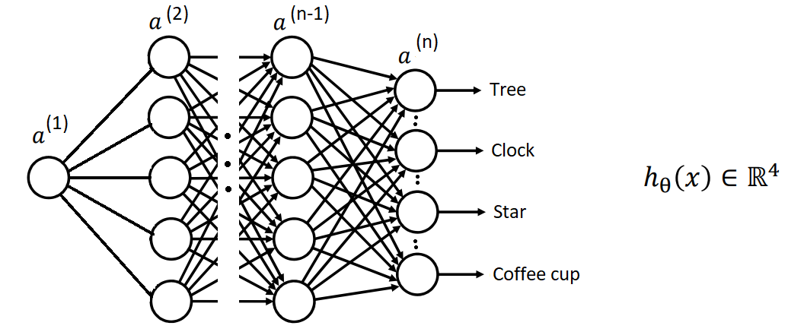
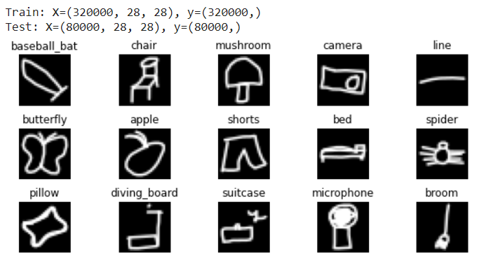

Proiectul consta in definirea si antrenarea supervizata a unei retele neuronale ce este capabila sa identifice, dintr-o multime de 100 de figuri grafice diferite, categoria din care acestea fac parte.
Reteaua neuronala va realiza astfel o clasificare de tip multiclasa si va avea urmatoare strctura: un neuron pe stratul de intrare ce contine informatiile despre figura grafica realizata de catre utilizator, mai multe straturi ascunse, si 100 de neuroni pe stratul de iesire, fiecare neuron reprezentand categoria din care figura grafica face parte.
Etape:
Codul sura este disponibil pe contul de github: https://github.com/RClaudia/SRVA.
Locatia contului drive in care se gasesc setul de date si modelul salvat: https://drive.google.com/drive/u/1/folders/1Q5lRetWhqOc2aBh75gnY5nNLAf6nSF8J.
Fisierul *.ipynb in care a fost antrenata reteaua: https://colab.research.google.com/drive/16T9JyWbpoqUqsIUxhDZZ6R6M4keQVDN6.
Pentru demo
Baza de date utilizata este denumita Quick Draw dataset si reprezinta o colecție de 50 de milioane de figuri grafice din 345 de categorii. In realizarea acestui proiect am ales insa doar 100 de catogorii pentru antrenarea si testarea retelei neuronale.
Baza de date este structurata in 2 categorii: setul de date pentru antrenarea retelei (320000 figuri grafice) si setul de date pentru testarea acesteia (80000 figuri grafice).
Sursa bazei de date este următoarea: https://github.com/googlecreativelab/quickdraw-dataset
Arhitectura retelei este alcatuita din 3 straturi de convolutie cu filtru de dimensiune 3x3 si functie de activare "ReLU".
Fiecare strat de convolutie este urmat de catre un strat de max-pooling ce ia vecinatati de 2x2, reducand astfel dimensiunea matricelor de intrare pentru urmatorul strat.
Deoarece hartile de trasaturi care rezulta din straturile de convolutie sau pooling sunt reprezentate ca matrici, acestea sunt aplatizate (vectorizate) folosind functia Flatten().
Reteaua mai contine si doua straturi de neuroni fully connected (dense) cu 128, respectiv 100 de neuroni.
In urma antrenarii retelei s-a obtinut o acuratete egala cu 92.62%.
In urma testarii retelei s-a obtinut o acuratete egala cu 92.14%.
Predictie:
[1] Quick Draw dataset: https://github.com/googlecreativelab/quickdraw-dataset
[2] TensorFlow for JavaScript guide: https://www.tensorflow.org/js/guide/
[3] Train a model in tf.keras with Colab, and run it in the browser with TensorFlow.js: https://medium.com/tensorflow/train-on-google-colab-and-run-on-the-browser-a-case-study-8a45f9b1474e
[4] Fabric.js Copyright 2008-2015, Printio (Juriy Zaytsev, Maxim Chernyak): https://gist.github.com/samuelhorwitz/5b8075ae65e658044c503ff15fed07c4